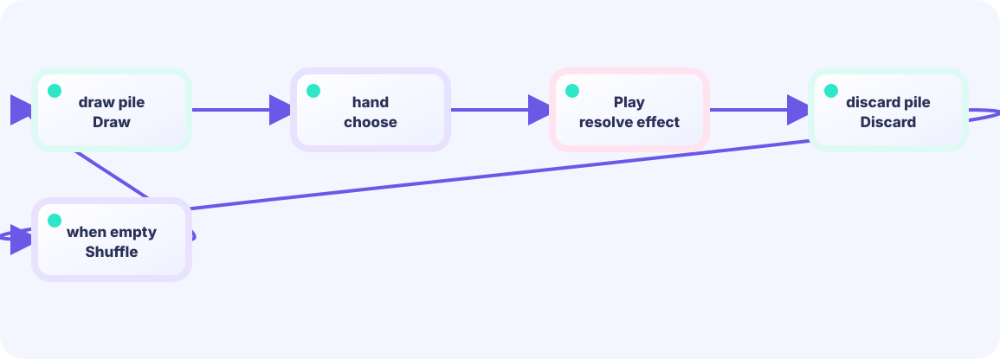

Draw one
Move the last card of draw into hand. Remove it from draw so one card can never be in two places at once.
hand = append(hand, draw[last])★★★☆☆ / PLAYABLE
Move cards among three piles, and reshuffle the discard pile only when the draw pile is empty.
PLAYABLE / WEBASSEMBLY
Press 1–5 or tap a card to play it. Press E or the bottom button to end the turn. Defeat the enemy to clear.
FIRST-TIME READER
Find where this one line is used, then follow how its value changes on screen. This is the shared game-state boundary: add rules in Update, then choose an independent presentation in Draw. The numbered steps below add one system at a time.
ONE RULE TO TRACE
Match the explanation to this line, then test the change in the game.
hand = append(hand, drawPile[0])
DEEP DIVE / DECK CYCLE
Do not delete it. Change only its home: draw pile → hand → discard pile. When draw is empty, move discard back, shuffle, and keep drawing.
Move the last card of draw into hand. Remove it from draw so one card can never be in two places at once.
hand = append(hand, draw[last])After calculating attack or block, remove the card from hand and append it to discard. Discard means waiting, not erased.
discard = append(discard, played)Only when draw reaches zero, return every discarded card and randomize their order. Do not reshuffle early.
if len(draw) == 0 { reshuffle() }TRY IT / DRAW CYCLE
Play cards (spend) → end turn refills. Deck/discard cycling belongs on that same turn boundary so state stays easy to find.
Empty draw pile? Shuffle discard into draw—also on the turn edge.
THE CYCLE EDGE
play: hand → discardthenturn end: draw / reshuffleKeep cycling on the turn edge and mid-combat bugs drop.
IN THE REAL GAME
Draw until the hand has five. If draw is empty, move discard back and shuffle. rng.Shuffle(n, swap) needs a swap function: That callback is Fisher–Yates: Go picks pairs (i, j) and your function swaps draw[i] with draw[j].
for len(hand) < 5 {
if len(draw) == 0 {
draw = append(draw, discard...)
discard = discard[:0] // reuse the slice; reset its length only
rng.Shuffle(len(draw), swap)
}
last := len(draw) - 1
hand = append(hand, draw[last])
draw = draw[:last]
}WHY THREE PILES?
Ready to draw, available to choose, and already used become easy rules when they are separate slices.
WHY SHUFFLE?
The same twelve cards make new combinations, creating interesting guesses about the next draw.
TRY NEXT
Design a fourth slice for cards that must not return during this battle.
FEEDBACK